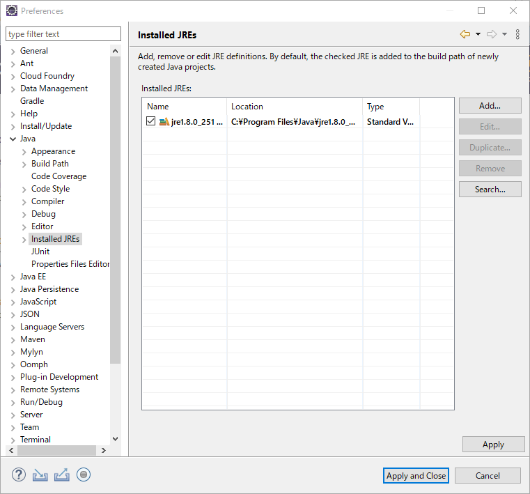
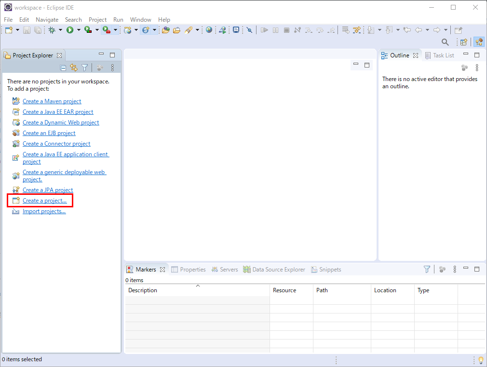

JAVA 프로그램 개발을 위한 Eclipse 기본 환경구축
JAVA 프로그램 개발을 위한 Eclipse 기본 환경구축
안녕하세요.
이번에 소개할 내용은 JAVA 개발을 위한 Eclipse 기본 환경구축 입니다.
본격적으로 이클립스상에서 개발을 하기전에 사전에 미리 환경설정을 하시고 프로젝트를 진행을 하셔야만
나중에 여러가지 다시 환경을 맞추고 하는 번거로움이 사라지게 됩니다.
그러므로 이클립스를 처음 설치후 사용하실때는 기본적인 설정을 해두시면
여러모로 편안한 개발을 하실수 있게 되겠습니다.
일단 이클립스를 실행해 주시기 바랍니다.
이클립스가 열리셨으면 설정을 해야하기때문에 Window메뉴 Preferences를 선택해 주시기 바랍니다.
아래와같이 설정화면이 나오게 되면 이클립스에 대한 세부적인 설정을 모두 여기서 하실수가 있습니다.
일단 최소 개발환경의 JAVA설정을 하기 위함이니 다른 설정은 다른 소개를 하면서 진행을 하도록 하겠습니다.
화면에서 Java앞의 > 를 선택해 주시기 바랍니다.
아래와 같이 Java의 상세 설정 메뉴들이 나오게 됩니다. 여기서 인스톨된 JDK 또는 JRE추가와
자바 컴파일러를 설정을 해보도록 하겠습니다.
그럼 메뉴의 Installed JREs를 선택해 주세요.
Installed JREs메뉴에 가시면 기본적으로 설치가 되어있는 jre1.8버전이 선택이 되어 있는것을 보실수 있습니다.
만일 개발중인 프로젝트에 따라 버전이 틀린경우 여기서 JDK 또는 JRE를 추가하시고 체크를 해주시면 되겠습니다.
일단 추가방법을 보겠습니다. ADD 버튼을 눌러주세요.

아래의 화면이 나오시면 Standard VM을 선택하시고 NEXT버튼을 눌러주세요.
새로운 JDK 또는 JRE를 추가를 해주어야 하기때문에 Directory를 눌러주세요.
JDK 또는 JRE가 설치된 폴더를 이동하신후 해당 폴더를 선택하시고 선택버튼을 눌러주세요.
그러면 선택하신 JDK 또는 JRE가 아래와같이 나오게 됩니다.
저는 이미 1.8버전이 추가가 되어 있는상태이므로 아래와같이 나오게 됩니다만
다른 버전을 추가하면 Finish가 활성화가 되며 버튼을 눌러주시면 처음의 리스트 목록에 등록이 된것을 확인할수 있습니다.
이렇게해서 설치된 JDK 또는 JRE의 다른 버전을 추가 등록하는 방법을 알아보았습니다.
이번에는 이클립스에서 프로젝트를 추가 하거나 할경우 처음 기본 컴파일러 버전 설정을 보겠습니다.
아래의 화면에서 왼쪽의 Compiler메뉴를 선택해 주세요.
Compiler메뉴로 이동하시면 아래와 같이 설치된 JDK 또는 JRE의 기본 버전으로 선택되어 있는것을 보실수 있습니다.
만일 개발한 프로젝트가 1.4 또는 1.6버전에 맞춰서 개발이 되어있으신 경우는 Compiler compliance level의 버전을
변경하셔서 해당 프로젝트에 맞게 바꾸실수 있습니다.
여기까지가 이클립스에서 JAVA개발에 필요한 기본 설정이 되겠습니다.
이제 간단한 프로젝트를 생성후 실행을 해보는것까지 해보도록 하겠습니다.
창을 닫아주시기 바랍니다.

간단하게 콘솔에 출력할수 있는 프로젝트를 생성을 위해 Create a project를 선택해 주세요.
위와 같이 나오시면 Java Project를 선택하시고 Next를 눌러주세요.
프로젝트 생성 화면이 나오시면 프로젝트명을 넣어주시고 다른건 기본설정으로 Finish버튼을 눌러주세요.
위와같이 프로젝트가 생성이 된것을 보시게 됩니다.
src에서 오른쪽 마우스 클릭후 New -> Class를 선택해 주세요.
클래스 파일명을 입력하시고 public static void main에 체크를 넣어주세요.
public static void main를 체크함으로써 메인클래스로 지정을 하며 콘솔용으로
바로 실행이 가능한 클래스로 선언을 하겠다는것 입니다.
그리고 Finish버튼을 눌러주세요.
위와같이 클래스파일과 기본적인 문법이 작성되어 있는것을 보실수 있습니다.
이제 여기서 간단하게 Hello, AkibaTV!라는 문장을 입력후 콘솔에 출력이 되는것을 해보도록 하겠습니다.
아래와 같이 코딩을 해주세요.
1 | public class test { |
작성을 하셨으면 이제 실행을 해보도록 하겠습니다.
상단의 > 버튼옆의 작은 ▼을 누르시면 test프로젝트를 선택해서 실행하실수 있습니다.
프로젝트를 실행하시면 위와같이 콘솔창에 Hello, AkibaTV!가 출력된것을 확인하실수 있습니다.